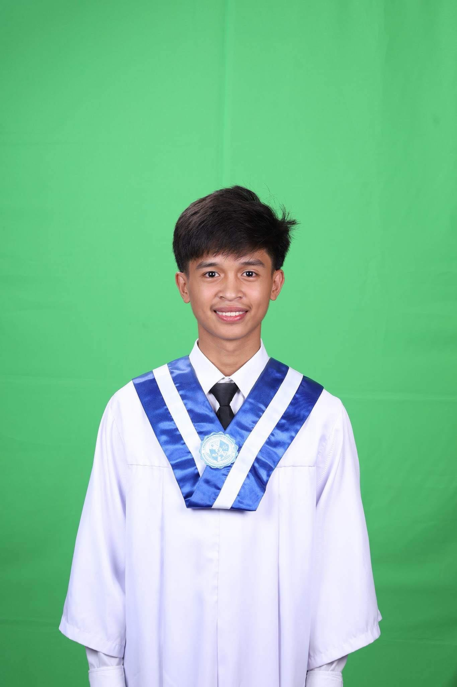

2026–2027 · CURRENT
Davao del Norte
State College
Bachelor of Science in Information Technology
FOURTH-YEAR BSIT STUDENT
WENDYL ZIV S. ARELLANO
Learning with curiosity.
Building with purpose.
An Information Technology student at DNSC, growing through thoughtful design, hands-on projects, and a little experimentation.

THE PERSON BEHIND THE PROJECTSI’m Wendyl, a fourth-year Information Technology student at Davao del Norte State College.
I enjoy learning new things and bringing care and creativity to my work. Through coursework and personal projects, I’m developing the technical and communication skills to turn ideas into useful experiences.
My goal is to complete my studies, keep improving, and apply what I learn to projects that solve everyday problems.
Let’s start a conversation ↗Building knowledge in the classroom.
Putting it into practice through projects.
2026–2027 · CURRENT
Bachelor of Science in Information Technology
PREVIOUS EDUCATION
Panabo City
Technical practice, creativity,
and working well with others.
Tools and concepts used in my academic work and this portfolio.
Skills I continue to develop through school and personal projects.
SmartAqua Pro is an IoT-based aquarium monitoring and automation system designed to help fish owners maintain a healthy environment for their fish.
Hello, I’m
Wendyl.
A responsive home for my profile, education, skills, and work. Built with accessible navigation and thoughtful interactions.
openapi: 3.0.3 ↳ student-api.yaml
An OpenAPI specification for retrieving student records and registering students, with path parameters and HTTP response codes.
This is an API documentation exercise rather than a running backend. It describes GET and POST operations, a required student ID path parameter, and 200, 201, and 404 responses.
ACADEMIC & PERSONAL PROJECTS
Developing a CV website and maintaining its source in GitHub. Practicing page structure, responsive styling, and version control.
IT415 COURSEWORK
Working with the Student Information API scenario to describe endpoints, request bodies, parameters, and responses using OpenAPI.
06 / SAY HELLO
Have a project idea, a learning opportunity, or just want to say hello?
wendylzivarellano@gmail.com